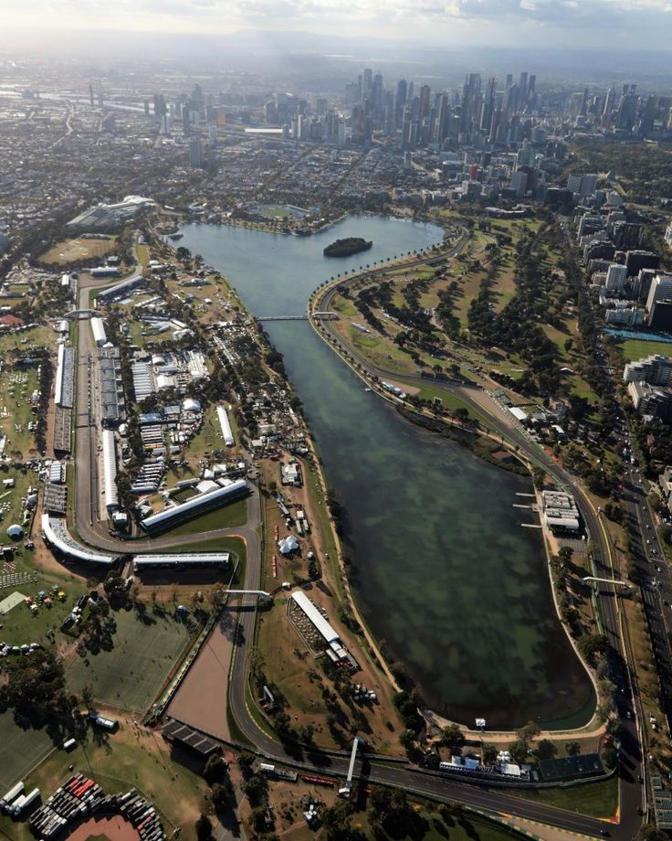

Albert Park Circuit

Technical Details
Location: Melbourne, Australia
Length: 5.278 km
Laps: 58
First GP: 1996
Curiosities
The Albert Park Circuit is a semi-street track set around a scenic lake in Melbourne, known for its fast-flowing layout and temporary nature. It became the home of the Australian Grand Prix in 1996, replacing Adelaide. The circuit is famous for its "street circuit feel" combined with high-speed corners and smooth asphalt, making it one of the most driver-friendly street venues on the calendar. Its opening race often sets the tone for the F1 season.